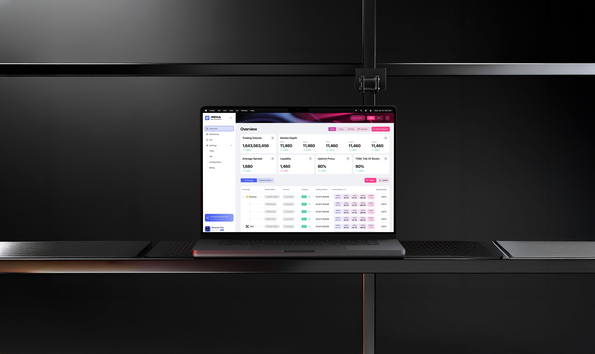
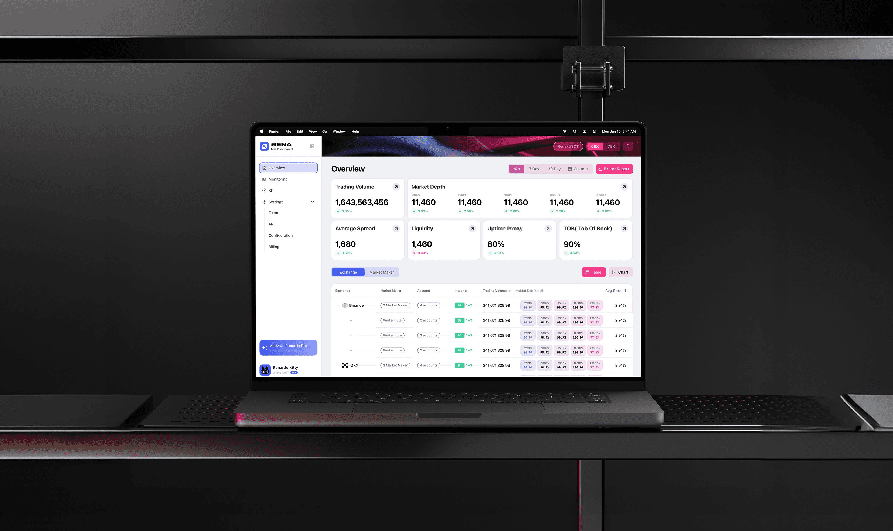
MM Dashboard
Act before risk compounds
Overview
MM Dashboard is a liquidity intelligence platform for token issuers and market-making teams. As a growing Web3 analytics product, it helps projects monitor cross-exchange liquidity, market depth, and anomaly events.
In 2024, the platform required a redesign to better support modern workflows. The existing dashboard had not seen a major update since its initial release, resulting in fragmented insights and inconsistent data across CEX and DEX venues.
Our hypothesis was that by unifying liquidity visualization through a K-Curve–centric model, improving navigation, and introducing a clearer MM integrity framework, we could enhance usability, increase trust, and establish a stronger foundation for future product growth.
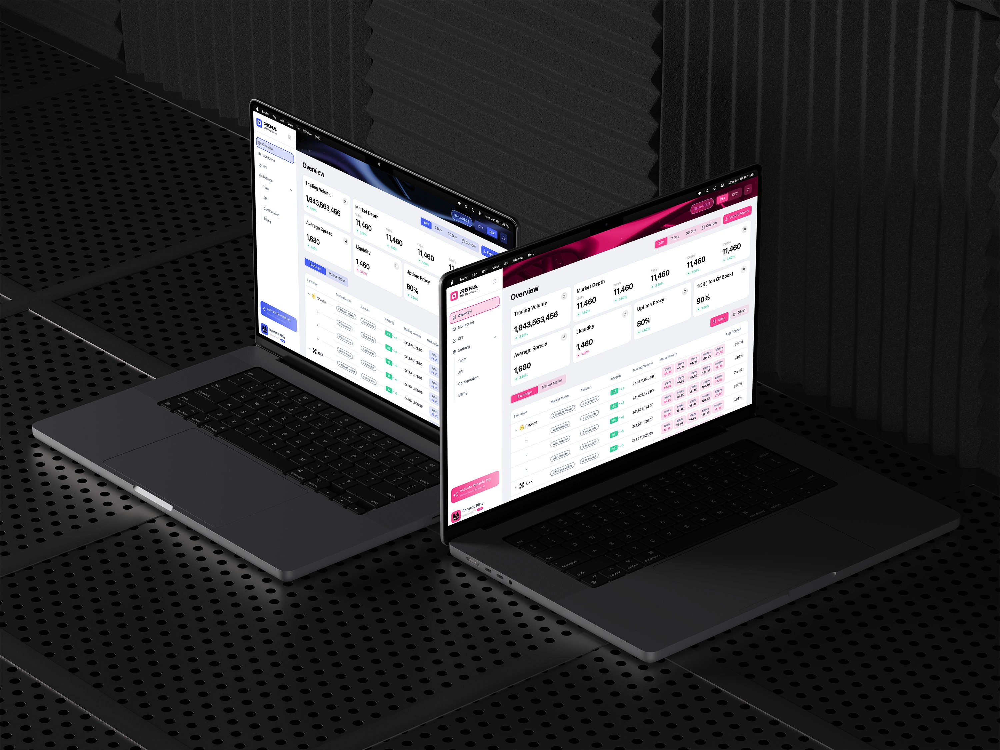
Challenge
Token issuers rely on MM Dashboard to understand how their liquidity behaves across CEX and DEX venues. However, the previous dashboard showed information in a fragmented way—liquidity, anomalies, spreads, and market-maker behavior existed as isolated datasets without a unifying visual model. This created unnecessary cognitive load and made it difficult for teams to interpret their market conditions with confidence.
As the platform continued to grow, new features like DEX monitoring, AMM pool analysis, and MM integrity scoring were added on top of the old structure. Over time, the dashboard became harder to navigate and less aligned with how users actually think about liquidity.
The challenge was to redesign the system so it could present complex, multi-venue data through a clearer narrative—one that helped users see relationships, compare behaviors, and make faster, better decisions.
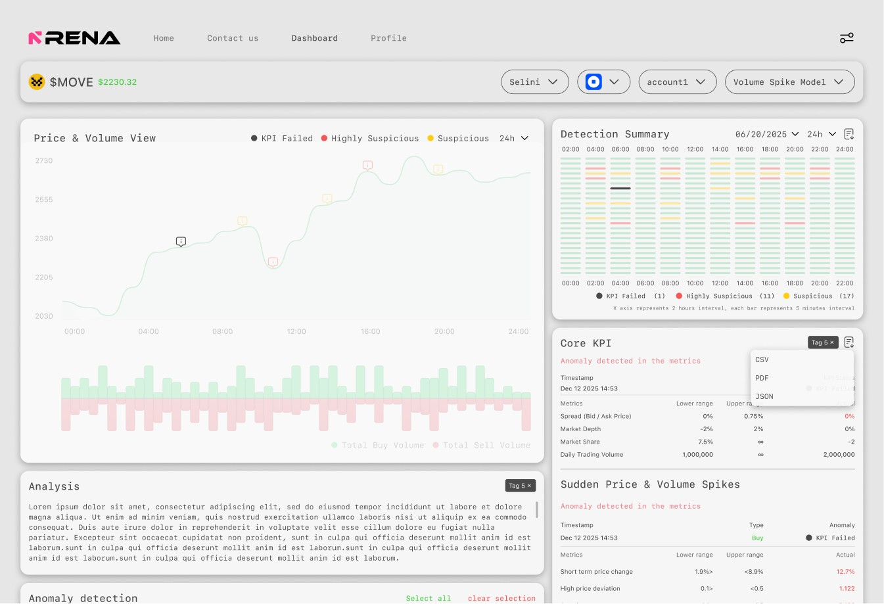
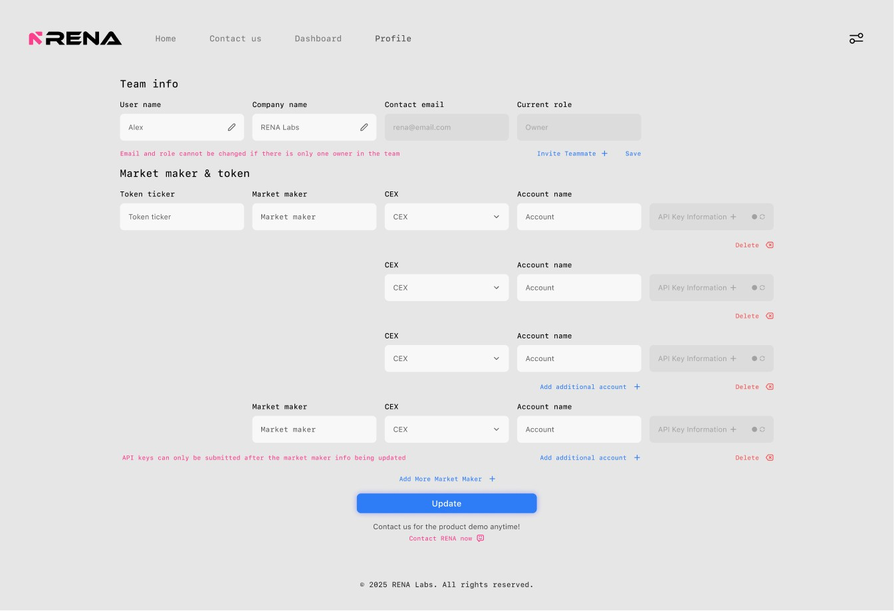
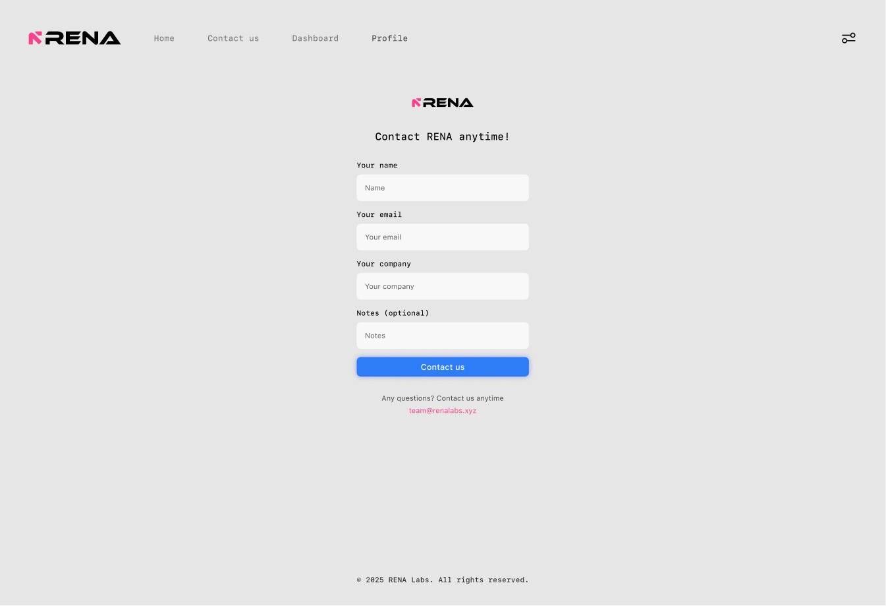
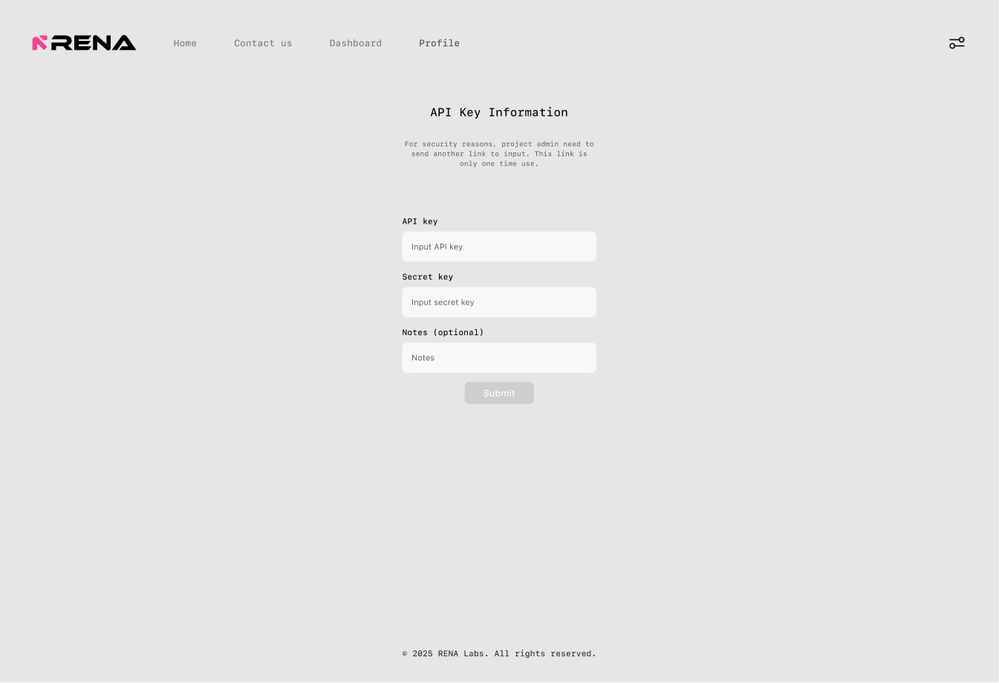
Observations
My process began with a deep analysis of MM Dashboard Ver.1, examining the dashboard’s structure, information hierarchy, and the overall experience from the perspective of a token issuer.
Through this review, I evaluated how liquidity data, anomaly signals, and market-maker activity were presented. Although each module functioned independently, the pages used almost identical layouts, creating a repetitive structure that made it difficult for users to see how CEX and DEX data relate—and often left them unsure where to focus.
Evolution
Early iterations concentrated most charts and metrics on the homepage, pushing auxiliary functions to secondary pages. While this surfaced information quickly, it also created visual density and made scanning difficult for a data-driven dashboard.
To address this, the structure was refined by breaking the homepage into more granular, purpose-driven charts and clarifying the information hierarchy. This shift significantly improved readability and allowed users to locate specific data more precisely. However, as CEX and DEX shared many overlapping data types, the growing number of parallel menu options introduced new friction—revealing the need for a more scalable structure in the next iteration.
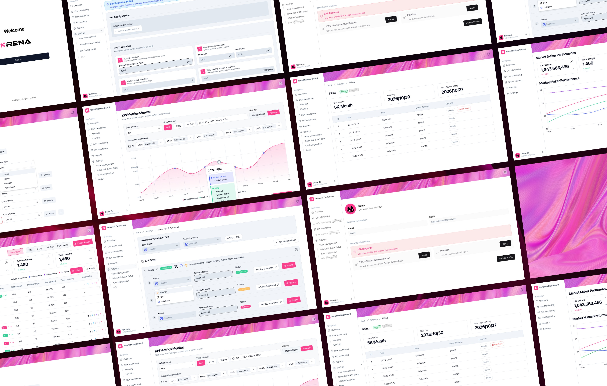
Features
Overview
The Overview page organizes key liquidity and market-maker indicators into a clear, scannable dashboard. Core KPIs follow consistent visual patterns for fast comparison, while a modular table layout standardizes how venues, accounts, and integrity metrics are displayed.
Users can switch between CEX and DEX modes via the top-right toggle, allowing them to focus on a specific market context without visual clutter. A dual color system—pink for CEX and blue for DEX—reinforces the active mode and helps users quickly orient themselves while scanning data.
By combining mode-based switching with a unified layout, the dashboard reduces cognitive load and supports accurate analysis across different market structures.
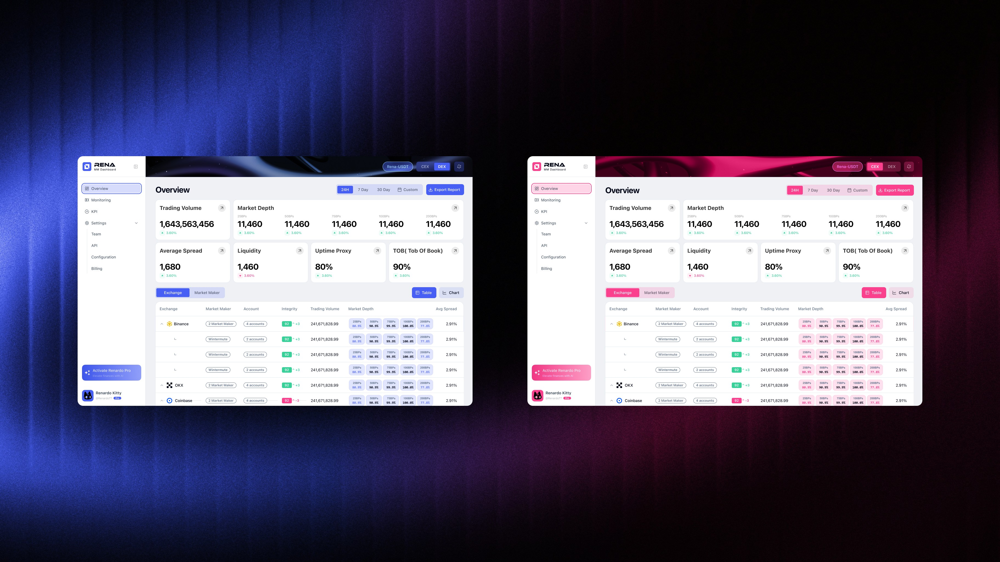
Features
KPI Failure & Anomaly
This interface is designed as an exception-focused view, isolating KPI failures from overall performance metrics. By separating failure signals into a dedicated space, users can quickly identify where market-making obligations are not being met, compare problematic exchanges or accounts, and assess whether issues are temporary or systemic.
The combination of tabular comparison and time-based visualization supports both fast diagnosis and informed decision-making, allowing issuers to act with greater confidence and clarity.
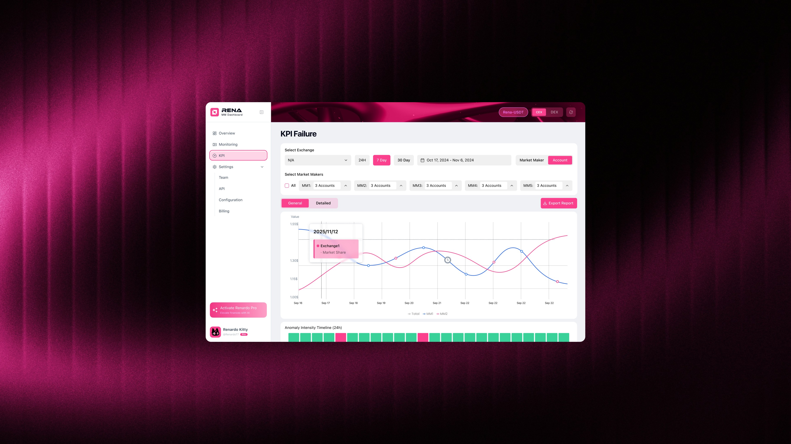
Features
API Setup
The API Setup module defines how market-maker data is connected, validated, and monitored across exchanges. It allows issuers to configure token pairs, manage market-maker accounts, and verify API status in real time—ensuring that all downstream KPI and failure analyses are based on reliable data sources. By surfacing API health, account status, and anomaly logs within the same interface, this view enables faster diagnosis, clearer accountability, and more confident decision-making when issues arise.
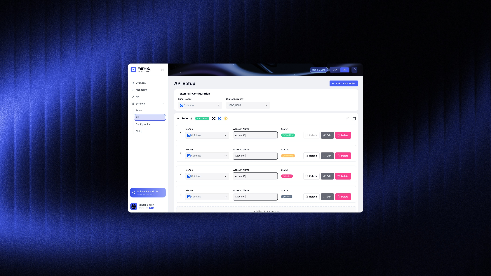
Design System
Built for consistency and control—each component ensures precision across the entire remix interface.
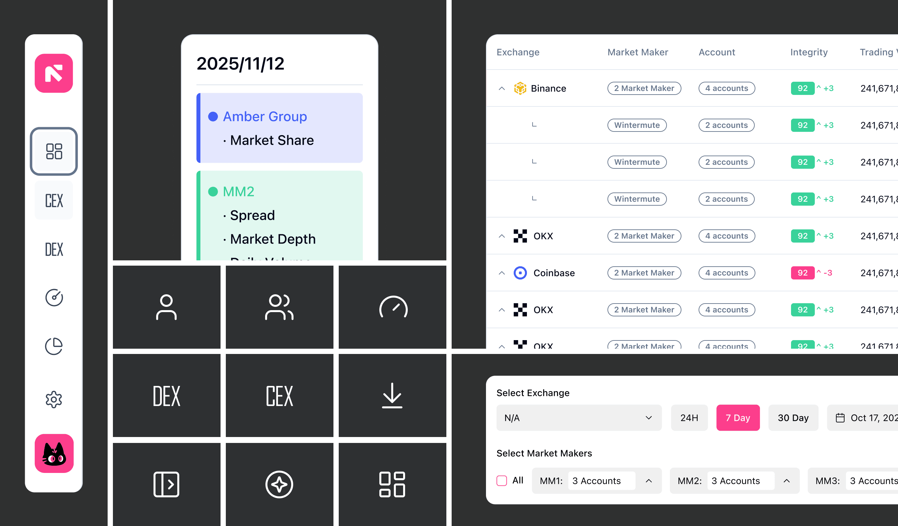
Color Palette
Redesigned color palette—tones are curated to reflect energy and mood, helping you read the mix at a glance and feel every transition more vividly.
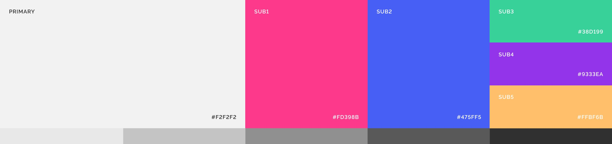
Feedback & Refinements
MM Dashboard now maintains a directory of over 100 market-making teams, serving as a centralized reference for project founders looking to connect with Liquidity providers.
Through these discussions, I gained clarity on where design ambition needed to be adjusted to align with technical constraints, and where refinements would meaningfully improve usability without adding unnecessary workload to engineering. Many of the screens shown above are extremely close to what eventually shipped, with only a few targeted adjustments made after additional rounds of review.